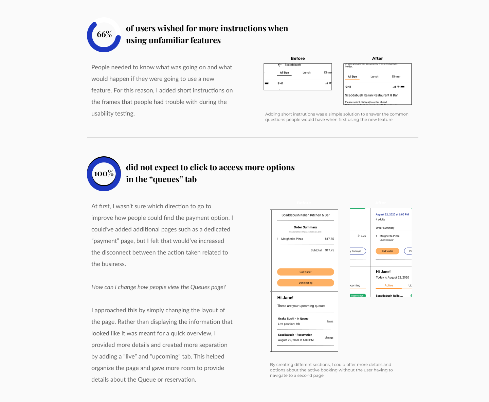
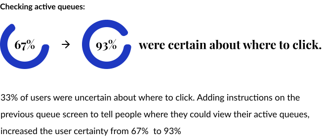
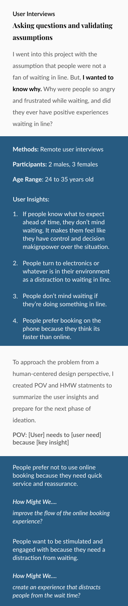
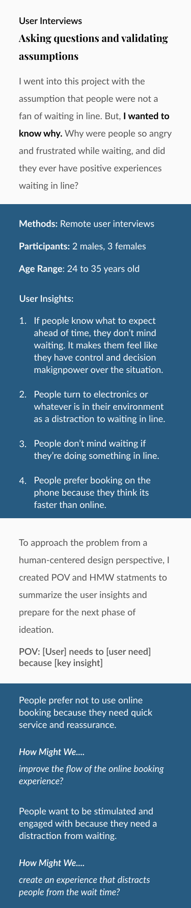

This project stemmed from my own frustrations of arriving to a destination and being faced with an unexpected wait time. Unlike Disneyland, where people are happy to wait over an hour, there’s little to do in grocery store lines except look around or down at your phone. This project aimed to solve this emotional frustration by creating a system to provide people with the information and options to avoid unexpected wait times.
A study done on the social and psychological perspective of what times showed that anxiety, stress, and uncertainty are just a few of the emotions that people can experience while waiting in line. While local businesses had a place to display their peak hours and wait times, there was no actual system in place to provide action in avoiding wait times.
What could be done to address the emotional frustration that people felt?
Design Solution
Queue is an online application where people can connect with local businesses and mitigate wait times through various unique features.
With transparent information about a businesses’ wait times and reservation availabilities, people remain in control to efficiently go about their day. The app provides people with options to join a virtual Queue, make a reservation, and even order from a menu ahead of time. By creating a central place for communicating important information between businesses and consumers, people can remain in control to efficiently go about their day.
Understanding people’s thoughts, questions, and emotions
I noticed that participants all had a similar emotion and thought process when explaining a negative experience waiting in line. To summarize my findings, a customer journey map was the best way to show the steps and feelings, and visualize where Queue’s features could plug in and help.
Using the information I found from reviews over the past year on capterra.com and sitejabber.com, I created a chart to compare the commonalities and differences between each competitor.
Brainstorming
Creating for the users
Using POV and HMW statements created, I did several brainstorming sessions to come up with creative solutions that would solve people’s pain points.
Following IDEO's guidelines, subsequent sessions were spent finding common themes amongst the ideas and further conceptualizing into final features.
People prefer not to use online booking because they need quick service and reassurance.
How might we improve the flow of the online booking experience?
People want to be stimulated and engaged with because they need a distraction from waiting.
How might we create an experience that distracts people from the wait time?
Task flows
Asking how people can achieve their goal
With my features in mind, I created a chart depicting the different task flows that a user could take depending on their wants. This helped me show how many screens would need to be created, and potentially where I could minimize lengthy task steps.
Wireframes
Creating and choosing the best designs
To test out different ideas and layouts for the screens I needed, I created a collection of low fidelity wireframes.
First usability testing
Testing design flows
For the first round of usability testing, I wanted to focus on the task flows of newly implemented features. My goals were to:
Assess the task flow of the new features in the prototype
Evaluate the current layout - is everything where they expected it to be?
Gather feedback on what else participants would want to see incorporated within the prototype
Using the mid-fidelity wireframes, I created an interactive prototype to be used for testing. Afterwards, I created an affinity map to see where the most common problems were happening. This helped me prioritize what I should iterate on.
Participants: three Age group: 24-35 years old Method: remote task-based interviews Measuring success:
- min. 70% of users can complete the task
- less than 70% of users are confused
- overall positive feelings towards the design
Affinity Map
The general flow of the prompted tasks went smoothly. They all had a 100% completion rate. However, it was the details in the prototype where I uncovered the areas that users had uncertainty.

Second usability testing
Making the most out of little time
This time around, I was mainly focusing on the UI design of the prototype and testing the iterations made to the task flows. Maze was used for remote, unmoderated testing because it allowed me to collect more responses within a short time frame. My goals were:
Test the changes to the task flow for checking active queues and paying for a meal
Assess the UI design
Participants: sixteen Age group: 24-35 years old Method: unmoderated testing Measuring success:
- areas with less than 70% of confusion or misclicks
- rating a task less than a 4/10 for difficulty
- minimal complaints towards UI design

Branding guide
Queue is friendly, trustworthy, and professional
Queue’s brand is meant to act like a messenger between the customers and businesses. Keeping it professional will help establish customer trust, but incorporating a level of friendliness will further the customer-application relationship.


 
